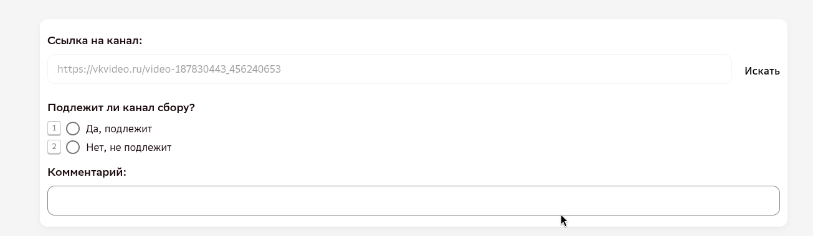

ОБЗОР
Что за проект
Проект — сбор ссылок на видеоколлажи: ролики, разделённые на две части с идентичным движением.
После монтажа и CGI
Финальная сцена — как её видит зритель, спецэффект уже наложен.
На зелёном или синем экране
Та же самая съёмка до наложения спецэффектов — фон ещё не заменён.
⇄ Порядок частей не важен — подходит и «до → после», и «после → до».
Задача — собрать 1000 таких видео. Формат задания простой: одна ссылка — одно задание. Подробности о полях и проверках — на странице «Критерии отбора видео».
Если в кадре «до» эффекта зелёного или синего фона не видно — это не мешает сбору. Главное, что коллаж в принципе показывает эффект CGI: сравнение кадра до и после обработки.
Запрет на «видео, сделанные ИИ» — это не про компьютерную графику и киноспецэффекты (CGI), а именно то, что мы и собираем. Запрет — про ролики, которые нейросеть сгенерировала целиком (например, по текстовому запросу). Разбор с примером от заказчика — на странице «Критерии отбора видео».
ТЕРМИНЫ
Видеоколлаж
Видеоколлаж — это видео, где кадр поделён на две части (по горизонтали или по вертикали — коллаж может быть как горизонтальным, так и вертикальным), и в обеих частях выполняется одно и то же движение по одной и той же траектории.
- граница между частями тонкая и проходит ровно посередине (обе половинки равны друг другу по размеру);
- масштаб человека в обеих частях совпадает.
- коллажи с толстой границей;
- коллажи со смещённым разделением или разным масштабом частей.
Подробный разбор с примерами — на странице «Критерии отбора видео».
СТАРТ
Два формата: рабочие задания и экзамен

Рабочие задания и вступительный экзамен выполняются в личном кабинете на платформе Tagme; доступ к нему выдаёт руководитель группы Data Light. Интерфейсы у них разные — не перепутайте.
Рабочие задания
Ссылку ищете и добавляете вы сами: вставляете её в поле, отмечаете ориентацию видео (вертикальная / горизонтальная) и нажимаете «Проверить ссылку», чтобы исключить дубли. Без отмеченного чекбокса и проверенной ссылки задание не отправится. Экран рабочего задания — на странице «Критерии отбора видео».
Экзамен
На экзамене всё наоборот: ссылку на видео вам уже дают в задании. Вы открываете её, оцениваете по критериям и отмечаете «Да, подлежит» / «Нет, не подлежит». Если «не подлежит» — в поле «Комментарий» нужно кратко пояснить причину (например: склейка, наложение и т.п.).

- Всего 20 заданий, на каждое — 15 минут.
- Проходной балл — 17 из 20 (85%) правильных ответов.
Если экзамен не пройден с первого раза — повторного доступа пока нет. Отнеситесь к прохождению максимально внимательно.
Перед отправкой каждого задания на экзамене — проверьте, что при ответе «Нет, не подлежит» заполнено поле «Комментарий».
ПРОЦЕСС
Как устроена проверка
- Все присланные ссылки проходят проверку валидатором — в 100% объёме, выборочных проверок нет.
- Если валидатор отклоняет уже принятую ссылку — повторно она не принимается: нужно предложить другое видео.
- Кнопка «Проверить ссылку» ловит только точное совпадение уже добавленной ссылки. «То же самое движение» на другом видео она не отследит — общего списка уже собранных движений в этом проекте нет, за неповторяемостью движений исполнитель следит сам (подробнее — «Повторы движения»).